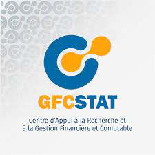

Le Centre d'Appui à la Recherche et à la Gestion Financière et Comptable est une structure créée pour accompagner toutes activités de recherche dans leurs composantes statistique, aider les PME/PMI à la gestion de leur finance et comptabilité, et promouvoir l'accès aux technologies de l'information et de la communication.
Dorcas F. DASSI, diplomée en statistique et économétrie, assure la gestion du centre en qualité de responsable adjointe.